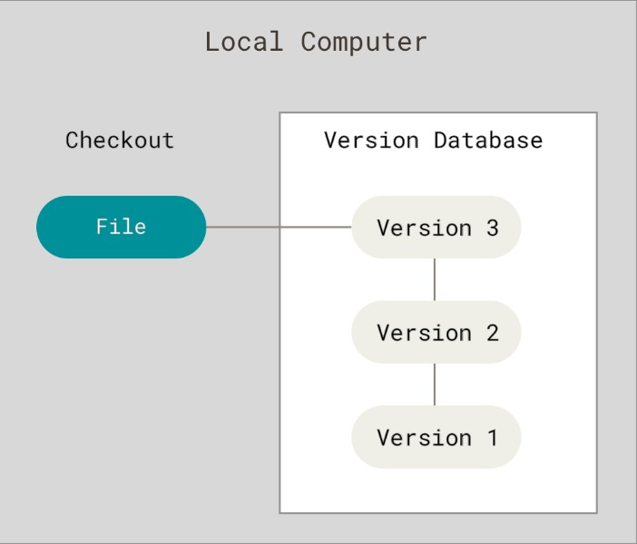
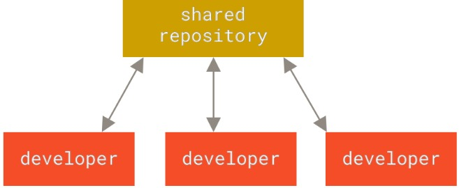
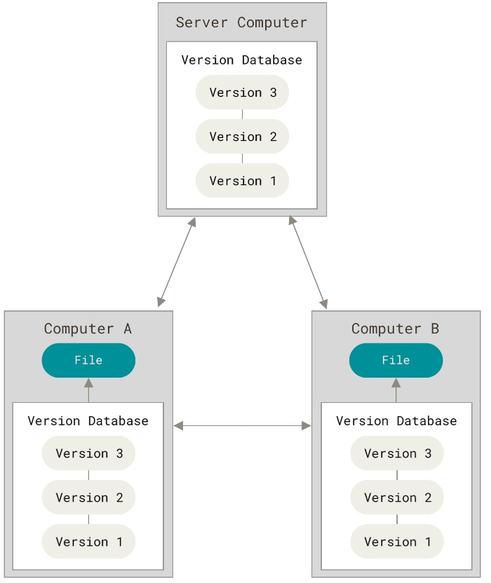
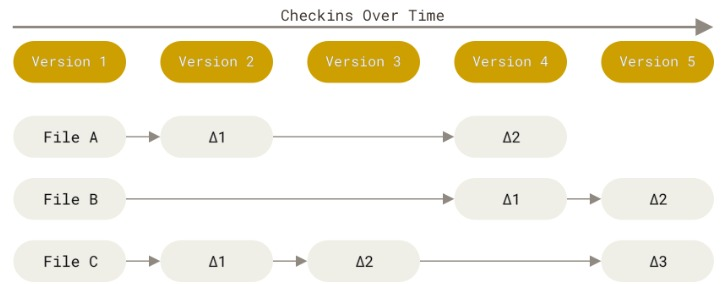
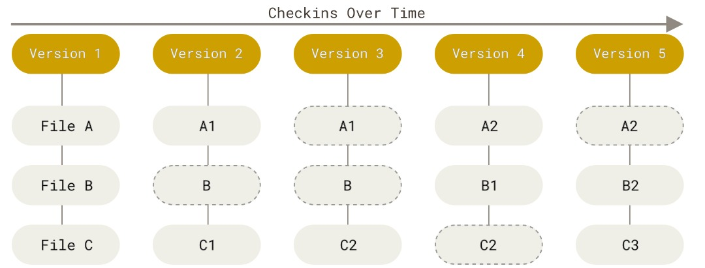
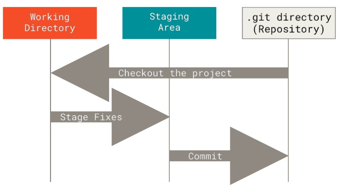
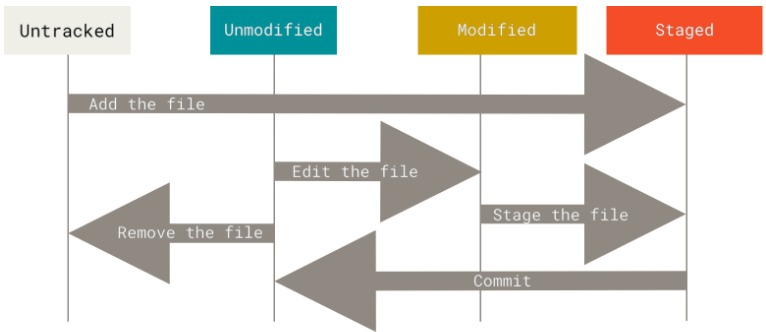

Git - жобалардағы, ең алдымен бастапқы кодтағы өзгерістерді бақылау және нұсқалау құралы, әзірлеушілерге жоба бойынша бірлесіп жұмыс істеуге, алдыңғы нұсқаларға оралуға және жаңа мүмкіндіктермен қауіпсіз тәжірибе жасауға мүмкіндік береді. Бұл әрбір әзірлеушіде жоба тарихының толық көшірмесі бар таратылған жүйе.
Git-ті орнату
Нұсқаны басқару туралы
Нұсқаны басқару жүйесі дегеніміз не және ол неліктен маңызды? Нұсқаны басқару жүйесі - бұл уақыт өте келе файлға немесе файлдар жиынтығына өзгерістерді жазып алатын және кейінірек белгілі бір нұсқаға оралуға мүмкіндік беретін жүйе. Бұл кітапта файл нұсқасын басқару үшін бағдарламалық жасақтаманың бастапқы кодын мысал ретінде пайдаланады, бірақ шын мәнінде сіз кез келген файл түрі үшін нұсқаны басқаруды пайдалана аласыз. Егер сіз графикалық немесе веб-дизайнер болсаңыз және кескіннің әрбір нұсқасын немесе орналасуын сақтағыңыз келсе (сіз, бәлкім, солай жасайсыз), нұсқаны басқару жүйесі (бұдан әрі VCS) - бұл ең жақсы нәрсе. Ол файлдарды өзгерістерге дейінгі күйіне қайтаруға, жобаны бастапқы күйіне қайтаруға, өзгерістерді көруге, кімнің бір нәрсені соңғы рет өзгерткенін және мәселе тудырғанын, тапсырманы кім және қашан тағайындағанын және тағы басқаларын көруге мүмкіндік береді. VCS пайдалану, әдетте, егер сіз бір нәрсені бұзсаңыз немесе файлдарды жоғалтсаңыз, оны оңай түзете аласыз дегенді білдіреді. Сонымен қатар, мұның бәрін қосымша күш жұмсамай-ақ аласыз.
Жергілікті нұсқаны басқару жүйелері
Көптеген адамдар нұсқаны басқару әдісі ретінде файлдарды бөлек каталогқа (егер ақылды болса, тіпті уақыт белгісі бар каталогқа) көшіруді пайдаланады. Бұл тәсіл қарапайымдылығына байланысты өте кең таралған, бірақ ол өте қателіктерге бейім. Қай каталогта екеніңізді ұмытып, кездейсоқ қате файлды өзгертіп немесе қате файлдарды көшіріп алу оңай. Бұл мәселені шешу үшін бағдарламашылар бұрыннан жергілікті VCS жүйелерін жасап шығарды, олар барлық файл өзгерістерінің жазбаларын сақтайтын қарапайым дерекқормен жабдықталған, осылайша түзетулерді басқаруды жүзеге асырады.
Жергілікті нұсқаны басқару
Танымал VCS-тердің бірі RCS болды, ол бүгінгі күнге дейін көптеген компьютерлерде таратылады. RCS патчтар жиынтығын (файлдар арасындағы айырмашылықтарды) дискіде арнайы форматта сақтайды, оны пайдаланып, әрбір файлдың белгілі бір уақыттағы күйін қайта жасай алады.
Орталықтандырылған нұсқаларды басқару жүйелері
Адамдар кездесетін келесі негізгі мәселе - басқа әзірлеушілермен бірлесіп жұмыс істеу қажеттілігі. Мұны шешу үшін орталықтандырылған нұсқаларды басқару жүйелері (CVCS) жасалды. CVS, Subversion және Perforce сияқты жүйелер барлық файл нұсқаларын қамтитын бір серверді және осы орталықтандырылған репозиторийден файлдарды алатын бірқатар клиенттерді пайдаланады. CVCS пайдалану көптеген жылдар бойы стандарт болып келеді.
Бұл тәсілдің көптеген артықшылықтары бар, әсіресе жергілікті VCS-ке қарағанда. Мысалы, барлық жоба әзірлеушілері бір-бірінің не істеп жатқанын белгілі бір дәрежеде біледі. Әкімшілер кімнің не істей алатынын толық басқарады және әрбір клиентте жергілікті дерекқорларды басқарудан гөрі CVCS басқару әлдеқайда оңай. Дегенмен, бұл тәсілдің де елеулі кемшіліктері бар. Ең айқын кемшілігі - орталықтандырылған сервер ұсынатын жалғыз ақаулық нүктесі. Егер бұл сервер бір сағатқа істен шықса, сол уақыт ішінде ешкім жұмыс істеп жатқан өзгерістерді сақтау үшін нұсқаны басқаруды пайдалана алмайды, сондай-ақ ешкім бұл өзгерістерді басқа әзірлеушілермен бөлісе алмайды. Егер орталық дерекқор орналасқан қатты диск зақымдалған болса және уақтылы сақтық көшірмелер болмаса, сіз бәрін жоғалтасыз - жобаның бүкіл тарихы, әзірлеушілердің жергілікті машиналарында сақталған оқшауланған репозиторий суреттерінен басқа. Жергілікті VCS дәл осындай мәселеден зардап шегеді: жобаның бүкіл тарихы бір жерде сақталған кезде, сіз бәрін жоғалту қаупін тудырасыз.
Таратылған нұсқаны басқару жүйелері
Бұл жерде таратылған нұсқаны басқару жүйелері (DVCS) рөл атқарады. DVCS-те (мысалы, Git, Mercurial, Bazaar немесе Darcs) клиенттер барлық файлдардың суретін (белгілі бір уақыттағы файлдардың күйін) жүктеп қана қоймайды - олар бүкіл репозиторийді көшіреді. Бұл дегеніміз, егер әзірлеушілер деректер алмасып жатқан серверлердің бірі істен шықса, кез келген клиенттің репозиториі жұмысын жалғастыру үшін басқа серверге көшірілуі мүмкін. Әрбір репозиторийдің көшірмесі барлық деректердің толық сақтық көшірмесі болып табылады.
Сонымен қатар, көптеген DVCS бір уақытта бірнеше қашықтағы репозиторийлермен" өзара әрекеттесе алады, бұл сізге бір жоба аясында бір уақытта әртүрлі тәсілдерді қолдана отырып, әртүрлі адамдар тобымен" жұмыс істеуге мүмкіндік береді. Бұл сізге орталықтандырылған жүйелерде мүлдем мүмкін емес иерархиялық модельдер сияқты бірнеше әзірлеу тәсілдерін қолдануға мүмкіндік береді.
Git-тің қысқаша тарихы
Өмірдегі көптеген нәрселер сияқты, Git шығармашылық хаос пен қызу пікірталаспен басталды. Linux ядросы - өте үлкен ашық бастапқы кодты жоба. Linux ядросын әзірлеудің көп бөлігі (1991–2002) үшін әзірлеушілер арасында патчтар мен мұрағаттар түрінде өзгерістер берілді. 2002 жылы Linux ядросы жобасы BitKeeper-дің меншікті орталықсыздандырылған нұсқаны басқару жүйесін қолдана бастады. 2005 жылы Linux ядросы қауымдастығы мен BitKeeper-ді әзірлеген коммерциялық компания арасындағы қарым-қатынас тоқтап, утилитаны тегін пайдалану мүмкін болмады. Бұл Linux ядросы қауымдастығын (және атап айтқанда, Linux-тың жасаушысы Линус Торвальдсты) BitKeeper-ден алынған сабақтарды ескере отырып, өздерінің утилитасын жасауға итермеледі. Жаңа жүйенің кейбір мақсаттары:
- Жылдамдық
- Қарапайым архитектура
- Сызықтық емес әзірлеуді жақсы қолдау (мыңдаған параллель тармақтар)
- Толық орталықсыздандыру
- Linux ядросы сияқты ірі жобаларды тиімді басқару мүмкіндігі
2005 жылы құрылғаннан бері Git бастапқы қасиеттерін сақтай отырып, пайдалануға оңай жүйеге айналды. Ол таңқаларлықтай жылдам, ірі жобалармен жұмыс істеу үшін тиімді және сызықтық емес әзірлеу үшін тамаша тармақталу жүйесіне ие.
Git дегеніміз не?
Қысқаша айтқанда, Git дегеніміз не? Материалдың осы бөлігін түсіну өте маңызды, себебі егер сіз Git деген не және оның қалай жұмыс істейтінінің негіздерін түсінсеңіз, оны пайдалану әлдеқайда оңай болуы мүмкін. Git-ті үйреніп жатқанда, Subversion және Perforce сияқты басқа нұсқаларды басқару жүйелері туралы білетіндеріңіздің бәрін ұмытып кетуге тырысыңыз. Бұл құралды пайдалану кезінде белгілі бір мәселелерден аулақ болуға мүмкіндік береді. Git ақпаратты басқа жүйелерге қарағанда мүлдем басқаша сақтайды және пайдаланады, дегенмен пайдаланушы интерфейсі өте ұқсас және бұл айырмашылықтарды түсіну оны пайдалану кезінде шатасуларды болдырмауға көмектеседі.
Суреттер, айырмашылықтар емес
Git пен кез келген басқа нұсқаны басқару жүйесі (Subversion және оның ағайындыларымен қоса) арасындағы негізгі айырмашылық - оның деректерін басқару тәсілі. Тұжырымдамалық тұрғыдан алғанда, басқа жүйелердің көпшілігі ақпаратты файл өзгерістерінің тізімі ретінде сақтайды. Бұл жүйелер (CVS, Subversion, Perforce, Bazaar және т.б.) сақталған ақпаратты файлдар жиынтығы және әр файлға уақыт өте келе енгізілген өзгерістер (әдетте айырмашылыққа негізделген нұсқаны басқару деп аталады) ретінде көрсетеді.
Git деректерді осылай сақтамайды немесе өңдемейді. Керісінше, Git-тің деректерді сақтауға деген тәсілі миниатюралық файлдық жүйенің бірқатар суреттеріне ұқсайды. Сіз Git-те жобаңыздың күйін сақтаған сайын, жүйе әрбір файлдың сол сәтте қалай көрінетінін есте сақтайды және сол суретке сілтеме сақтайды. Тиімділікті арттыру үшін, егер файлдар өзгермеген болса, Git бұл файлдарды қайтадан сақтамайды, тек бұрыннан сақталған бірдей файлдың алдыңғы нұсқасына сілтеме жасайды. Git өз деректерін, мысалы, суреттер ағыны ретінде ұсынады.
Бұл Git пен басқа барлық дерлік нұсқаларды басқару жүйелері арасындағы маңызды айырмашылық. Git басқа жүйелердің көпшілігі алдыңғы буыннан көшірген нұсқаларды басқарудың барлық аспектілерін қайта қарастырады. Бұл Git-ті қарапайым VCS-ке қарағанда, оның үстінде орнатылған таңғажайып қуатты утилиталары бар миниатюралық файлдық жүйеге көбірек ұқсатады.
Барлық операциялар дерлік жергілікті түрде орындалады.
Git операцияларының көпшілігі жергілікті файлдар мен ресурстарға негізделген — жалпы алғанда, жүйеге желіңіздегі басқа компьютерлерден ешқандай ақпарат қажет емес. Егер сіз көптеген операциялар желілік кідірістен зардап шегетін орталықтандырылған нұсқаны басқару жүйелеріне үйренген болсаңыз, Git-тің бұл аспектісі сізге жылдамдық құдайлары Git-ке шексіз күш берген деп ойлауға мәжбүр етеді. Жобаның бүкіл тарихы тікелей жергілікті дискіде сақталатындықтан, көптеген операциялар бірден орындалатын сияқты. Мысалы, жобаның тарихын көру үшін Git оны алу және көрсету үшін серверге қосылудың қажеті жоқ — жүйе деректерді тікелей жергілікті дерекқордан оқиды. Бұл жобаның тарихын бірден көретініңізді білдіреді. Егер сізге файлдың ағымдағы нұсқасы мен бір ай бұрын жасалған нұсқа арасында жасалған өзгерістерді көру қажет болса, Git қашықтағы серверден бұл операцияны орындауды сұраудың немесе файлдың ескі нұсқасын серверден алып, операцияны жергілікті түрде орындаудың орнына, бір айлық файлды тауып, өзгерістерді жергілікті түрде есептей алады. Бұл сондай-ақ, егер сіз офлайн режимде болсаңыз немесе VPN-ге қол жеткізе алмасаңыз, орындай алмайтын бірнеше әрекет бар екенін білдіреді. Егер сіз ұшақта немесе пойызда болсаңыз және жұмыс істегіңіз келсе, ешқандай қиындықсыз (жергілікті көшірмеңізге) коммиттер жасай аласыз, есіңізде ме?: желіге қосыла алсаңыз, барлық өзгерістер синхрондалуы мүмкін. Егер сіз үйге барып, VPN арқылы қосыла алмасаңыз, жұмыс істей аласыз. Басқа көптеген жүйелерде осындай әрекетке қол жеткізу өте қиын немесе мүлдем мүмкін емес. Мысалы, Perforce-те, егер сіз серверге қосылмаған болсаңыз, көп нәрсе істей алмайсыз; Subversion және CVS-те файлдарды өңдей аласыз, бірақ өзгертулеріңізді дерекқорға сақтай алмайсыз (өйткені сіз дерекқорға қосылмағансыз). Бұл үлкен мәселе болып көрінбеуі мүмкін, бірақ оның қаншалықты маңызды екеніне таң қаласыз.
Git тұтастығы
Git-те хэш сақталмас бұрын барлығы үшін есептеледі. Кейіннен сақталған нысандарға осы хэш арқылы қол жеткізіледі. Бұл Git байқамай файлдың немесе каталогтың мазмұнын өзгерту мүмкін емес дегенді білдіреді. Бұл функция Git-ке төмен деңгейде енгізілген және оның философиясының ажырамас бөлігі болып табылады. Git-тің хабарынсыз сіз ақпарат жоғалтпайсыз және бүлінген файлды алмайсыз. Git хэштерді есептеу үшін қолданатын механизм SHA-1 хэш деп аталады. Бұл файлдың немесе каталог құрылымының мазмұнына негізделген 40 таңбалы он алтылық жол (0-9 және a-f). SHA-1 хэш келесідей көрінеді :
Git-те хэштер үнемі кездеседі, себебі олар барлық жерде қолданылады. Шын мәнінде, Git барлық нысандарды өз дерекқорында атауы бойынша емес, нысан мазмұнының хэш мәні бойынша сақтайды.
Git әдетте тек қосуға арналған.
Git-те кез келген әрекеттерді орындаған кезде, олардың барлығы дерлік Git дерекқорына тек жаңа деректер қосады. Жүйені деректерді жоюға немесе қайтарылмайтын кез келген әрекетті жасауға мәжбүрлеу өте қиын. Кез келген басқа нұсқаны басқару жүйесі сияқты, өзгертулерді енгізгенге дейін жоғалтуыңыз немесе бүлдіруіңіз мүмкін, бірақ Git-те суретті енгізгеннен кейін, әсіресе дерекқорыңызды басқа репозиториймен үнемі синхрондасаңыз, ештеңені жоғалту өте қиын. Мұның бәрі Git-ті пайдалануды қуанышқа бөлейді, себебі біз күрделі мәселелерден қорықпай тәжірибе жасай алатынымызды білеміз. Git өз деректерін қалай сақтайтынын және жоғалған сияқты деректерді қалай қалпына келтіруге болатынын тереңірек түсіну үшін.
Үш күй
Енді мұқият тыңдаңыз. Егер сіз оқу процесінің қалған бөлігінің бірқалыпты өтуін қаласаңыз, Git туралы есте сақтау керек ең маңызды нәрсе осы. Git-те файлдарыңыздың болуы мүмкін үш негізгі күй бар: өзгертілген, кезеңді және бекітілген:
- Өзгертілген - өзгертілген, бірақ әлі бекітілмеген файлдар.
- Кезеңді - келесі бекітуге қосу үшін белгіленген ағымдағы нұсқасындағы өзгертілген файл.
- Бекітілген дегеніміз, файл жергілікті дерекқорыңызға сақталған.
Git жобасының үш негізгі бөліміне жеттік: жұмыс ағашы, кезеңді аймақ және Git каталогы.
Жұмыс көшірмесі - жобаның бір нұсқасының суреті. Бұл файлдар Git каталогындағы сығылған дерекқордан алынып, дискіге орналастырылады, осылайша оларды пайдалануға немесе өңдеуге болады. Кезеңдік аймақ - әдетте Git каталогында орналасқан, келесі коммитке не кіретіні туралы ақпаратты қамтитын файл. Git тіліндегі оның техникалық атауы "индекс", бірақ "кезеңдік аймақ" тіркесі де жұмыс істейді. Git каталогы - Git сіздің жобаңыздың метадеректері мен нысан дерекқорын сақтайтын орын. Бұл Git-тің ең маңызды бөлігі және басқа компьютерден репозиторийді клондау кезінде көшірілетін бөлік. Git-пен жұмыс істеудің негізгі тәсілі келесідей:
- Жұмыс көшірмесіндегі файлдарды өзгертіңіз.
- Келесі коммитке енгізілуі тиіс өзгерістерді ғана таңдамалы түрде кезеңге қосыңыз, осылайша кезеңге тек сол өзгерістердің суреттерін қосыңыз.
- Коммиттеген кезде, кезеңдегі файлдар сол қалпында пайдаланылады және бұл сурет сіздің Git каталогыңызға сақталады.
Егер файлдың белгілі бір нұсқасы Git каталогында болса, сол нұсқа компиляцияланған болып саналады. Егер файл өзгертіліп, кезеңге қосылған болса, ол кезеңді болып саналады. Ал егер файл репозиторийден соңғы рет кезеңді емес болғаннан бері өзгерсе, бірақ кезеңді емес болса, ол өзгертілген болып саналады. Git негіздері тарауында сіз осы күйлер туралы және олардан қалай пайда алуға болатыны немесе кезең бөлігін толығымен қалай өткізіп жіберу туралы көбірек білесіз.
Пәрмен жолы
Git-ті пайдаланудың көптеген әртүрлі тәсілдері бар. Пәрмен жолы интерфейсі бар жергілікті клиенттен басқа, Git функциясын әртүрлі дәрежеде жүзеге асыратын көптеген графикалық пайдаланушы интерфейсі (GUI) клиенттері бар. Бұл кітаптың мақсаттары үшін біз Git-ті пәрмен жолында қолданамыз. Бір жағынан, пәрмен жолы - барлық Git командаларын орындауға болатын жалғыз орын, себебі көптеген GUI клиенттері қарапайымдылық үшін Git функциясының тек бір бөлігін ғана орындайды. Егер сіз пәрмен жолында әрекетті қалай орындау керектігін білсеңіз, GUI нұсқасында да дәл солай істеуді біле аласыз, бірақ керісінше әрқашан дұрыс бола бермейді. Сонымен қатар, графикалық клиентті таңдау жеке қалау мәселесі болғанымен, пәрмен жолы құралдары Git орнатқаннан кейін бірден барлық пайдаланушылар үшін қолжетімді. Сондықтан, біз сіз Mac жүйесінде терминалды немесе Windows жүйесінде пәрмен жолын немесе PowerShell бағдарламасын қалай ашу керектігін білесіз деп есептейміз. Егер сіз мұнда не туралы айтып отырғанымызды түсінбесеңіз, осы кітаптағы мысалдар мен түсіндірмелерді түсіну үшін бір сәтке кідіріп, осы сұрақтарды зерттеуіңіз қажет болуы мүмкін.
Git бастапқы орнатуы
Git бастапқы орнатуы Енді Git жүйеңізге орнатылғандықтан, Git ортаңызды теңшеу уақыты келді. Мұны тек бір рет жасау керек - Git нұсқасын жаңартқан кезде параметрлеріңіз сақталады. Дегенмен, оларды кез келген уақытта сол командаларды қайта орындау арқылы өзгерте аласыз. Git құрамында git config деп аталатын утилита бар, ол сізге Git жұмысының барлық аспектілерін, соның ішінде оның сыртқы түрін басқаратын параметрлерді көруге және конфигурациялауға мүмкіндік береді. Бұл параметрлерді үш жерде сақтауға болады:
- [path]/etc/gitconfig файлында жүйедегі барлық пайдаланушыларға және олардың барлық репозиторийлеріне ортақ мәндер бар. Егер сіз git config іске қосқан кезде --system опциясын көрсетсеңіз, параметрлер оқылады және осы файлға сақталады. Бұл файл жүйелік файл болғандықтан, оған өзгерістер енгізу үшін сізге суперпайдаланушы құқықтары қажет болады.
- ~/.gitconfig немесе ~/.config/git/config файлы пайдаланушыға тән параметрлерді сақтайды.Бұл файл --global опциясын көрсеткен кезде қолданылады және ағымдағы жүйеде жұмыс істейтін барлық репозиторийлерге қолданылады.
- Қазіргі уақытта пайдаланып жатқан репозиторийдің Git каталогындағы (яғни, .git/config) конфигурация файлы репозиторийге тән параметрлерді сақтайды. Сіз Git-ті осы файлды --local опциясымен оқуға және жазуға мәжбүрлей аласыз, бірақ бұл шын мәнінде әдепкі параметр. Таңқаларлық емес, бұл опция дұрыс жұмыс істеуі үшін сіз Git репозиторийінің бір жерінде орналасуыңыз керек. Әрбір келесі деңгейдегі параметрлер алдыңғы деңгейлердегі параметрлердің орнын басады, бұл .git/config ішіндегі мәндер [path]/etc/gitconfig ішіндегі сәйкес мәндерді орнын басады дегенді білдіреді.
Windows жүйелерінде Git .gitconfig файлын $HOME каталогынан іздейді (көпшілік пайдаланушылар үшін C:\Users\$USER). Git сонымен қатар [path]/etc/gitconfig файлын іздейді, бірақ бұл жолы орнатушыны іске қосқан кезде Git орнатуды таңдаған MSys түбірлік каталогына қатысты. Егер сіз Git бағдарламасын Windows 2.x немесе одан кейінгі нұсқасы үшін пайдалансаңыз, жүйелік конфигурация файлы да ізделеді, ол Windows XP жүйесінде C:\Documents and Settings\All Users\Application Data\Git\config немесе Windows Vista жүйесінде C:\ProgramData\Git\config мекенжайларында орналасқан. Бұл файлды тек git config -f file командасын пайдаланып өзгертуге болады, оны әкімші құқықтарымен орындаңыз. Барлық конфигурацияланған параметрлерді көру және олардың қай жерде конфигурацияланғанын нақты білу үшін, пәрменді пайдаланыңыз:
Пайдаланушы аты
Git орнатқаннан кейін ең алдымен атыңыз бен электрондық пошта мекенжайыңызды орнатуыңыз керек. Бұл маңызды, себебі әрбір Git коммитінде осы ақпарат бар және ол сіз жіберетін коммиттерге кіреді және оны әрі қарай өзгерту мүмкін емес.
$ git config --global user.email johndoe@example.com
Тағы да, егер --global опциясы көрсетілген болса, сізге бұл параметрлерді тек бір рет конфигурациялау қажет, себебі Git бұл параметрлерді сіз осы жүйеде жасайтын барлық нәрсе үшін пайдаланады. Егер сіз белгілі бір жобалар үшін басқа атауды немесе электрондық поштаны көрсеткіңіз келсе, қажетті жобаны қамтитын каталогта --global опциясынсыз сол команданы орындай аласыз. Көптеген GUI құралдары оларды бірінші рет іске қосқан кезде мұны істеуді ұсынады.
Редакторды таңдау
Енді сіз өз атыңызды енгізгеннен кейін, Git-те хабарлама терген кезде пайдаланатын мәтін редакторын таңдау уақыты келді. Әдепкі бойынша, Git жүйеңіздің әдепкі редакторын, әдетте Vim-ді пайдаланады. Егер сіз Emacs сияқты басқа мәтін редакторын пайдаланғыңыз келсе, келесі әрекеттерді орындай аласыз:
Windows жүйесінде басқа әдепкі мәтіндік редакторды орнатқан кезде орындалатын файлдың толық жолын көрсетуіңіз керек. Орнатушының жұмыс істеу тәсіліне байланысты жолдар әртүрлі болуы мүмкін.Танымал редактор Notepad++ үшін 32 биттік нұсқасын орнату қажет болуы мүмкін, себебі 64 биттік нұсқасы әлі барлық плагиндерді қолдамайды. Егер сізде 32 биттік Windows немесе 64 биттік жүйеде 64 биттік редактор болса, келесі қадамдарды орындаңыз:
Vim, Emacs және Notepad++ - Linux және Mac сияқты Unix тәрізді жүйелерде де, Windows жүйелерінде де әзірлеушілер жиі қолданатын танымал мәтіндік редакторлар. Егер сіз басқа редакторды немесе оның 32-биттік нұсқасын пайдалансаңыз, оны Git-пен пайдалану туралы қосымша нұсқауларды git config core.editor commands бөлімінен қараңыз. Егер сіз редакторыңызды орнатпаған болсаңыз және Vim немесе Emacs-пен таныс болмасаңыз, олардың бірін іске қосқан кезде қиындықтарға тап болуыңыз мүмкін. Мысалы, Windows жүйесінде редакторды шақыруға тырысқанда Git командасы мерзімінен бұрын тоқтап қалуы мүмкін.
Әдепкі тармақты орнату
Git init командасымен репозиторийді инициализациялаған кезде, Git әдепкі бойынша master деп аталатын тармақ жасайды. 2.28 нұсқасынан бастап, әдепкі тармақ үшін басқа атау көрсете аласыз. Мысалы, әдепкі тармақ үшін main атауын орнату үшін келесі пәрменді орындаңыз:
Параметрлерді тексеру
Егер сіз пайдаланып жатқан конфигурацияны тексергіңіз келсе, Git табатын барлық параметрлерді көрсету үшін git config --list командасын пайдалана аласыз:
user.name=John Doe
user.email=johndoe@example.com
color.status=auto
color.branch=auto
color.interactive=auto
color.diff=auto
...
Кейбір конфигурация кілттері (атаулары) бірнеше рет пайда болуы мүмкін, себебі Git әр түрлі файлдардан параметрлерді оқиды (мысалы, /etc/gitconfig және ~/.gitconfig). Бұл жағдайда Git әр кілт үшін ең соңғы мәнді пайдаланады. Сондай-ақ, git config key командасын орындау арқылы белгілі бір кілттің мәнін тексеруге болады:
John Doe
Git параметр мәнін бірнеше файлдан оқитындықтан, Git сіз күткеннен басқа мәнді пайдалануы мүмкін. Бұл жағдайда, сіз Git-тен осы мәннің шығу тегі туралы сұрай аласыз. Git параметр мәні соңғы рет алынған файлдың атауын басып шығарады:
file:/home/johndoe/.gitconfig false
Көмек қалай алуға болады?
Егер сізге Git көмегімен көмек қажет болса, кез келген Git командасы үшін нұсқаулық бетін ашудың үш жолы бар:
$ git команда --help
$ man git-команда
Мысалы, git config командасының нұсқаулығын осылай ашуға болады.
Сонымен қатар, егер сізге тек опциялар тізімін көру қажет болса және толық командалық құжаттаманы оқығыңыз келмесе, қысқаша пайдалану нұсқауларын көрсету үшін -h опциясын пайдалануға болады:
usage: git add options [--] pathspec...
-n, --dry-run dry run
-v, --verbose be verbose
-i, --interactive interactive picking
-p, --patch select hunks interactively
-e, --edit edit current diff and apply
-f, --force allow adding otherwise ignored files
-u, --update update tracked files
--renormalize renormalize EOL of tracked files (implies -u)
-N, --intent-to-add record only the fact that the path will be added later
-A, --all add changes from all tracked and untracked files
--ignore-removal ignore paths removed in the working tree (same as --no-all)
--refresh don't add, only refresh the index
--ignore-errors just skip files which cannot be added because of errors
--ignore-missing check if - even missing - files are ignored in dry run
--chmod (+|-)x override the executable bit of the listed files
Git негіздері
Егер сіз Git-пен бір тарауда жұмысты бастағыңыз келсе, бұл сізге арналған тарау. Онда Git тапсырмаларының басым көпшілігін шешу үшін қажетті барлық негізгі командалар қамтылған. Бұл тарауды оқығаннан кейін сіз репозиторийді қалай орнату және инициализациялау, нұсқаны басқаруды бастау және тоқтату, өзгерістерді қалай кезең-кезеңмен орындау және бекіту керектігін үйренесіз. Сондай-ақ, біз сізге Git-ті жеке файлдарды немесе файлдар тобын елемеуге қалай конфигурациялау керектігін, қате өзгерістерді қалай тез және оңай қайтару керектігін, жобаңыздың тарихын және бекітулер арасындағы өзгерістерді қалай көру керектігін және қашықтағы репозиторийге және одан өзгерістерді қалай жіберу және алу керектігін көрсетеміз.
Git репозиторийін жасау
Әдетте Git репозиторийін екі жолмен аласыз:
- Қазіргі уақытта нұсқаны басқаруда емес жергілікті каталогты алып, оны Git репозиторийіне айналдыруға болады немесе
- Бар Git репозиторийін кез келген жерден клондауға болады.
Екі жағдайда да компьютеріңізде пайдалануға дайын Git репозиторийі болады.
Бар каталогта репозиторий жасау
Егер сізде Git нұсқасын басқаруда жоқ каталогта жоба болса, алдымен оған өтуіңіз керек. Егер сіз мұны бұрын жасамаған болсаңыз, бұл процесс әртүрлі операциялық жүйелер үшін әртүрлі болады. Linux-та:
MacOS-та:
Windows-та
Содан кейін пәрменді орындаңыз:
Бұл команда ағымдағы каталогта .git деп аталатын жаңа ішкі каталог жасайды, онда барлық қажетті репозиторий файлдары - Git репозиторий құрылымы бар. Бұл кезеңде сіздің жобаңыз әлі нұсқаны басқаруда емес. Егер сіз нұсқаны басқаруға бар файлдарды (бос каталогтың орнына) қосқыңыз келсе, оларды сахнаға қосып, бірінші коммитті орындауыңыз керек. Мұны git add командасын бірнеше рет іске қосып, сахнаға жіберілетін файлдарды көрсетіп, содан кейін git commit командасын орындау арқылы жасауға болады:
$ git add LICENSE
$ git commit -m 'Initial project version'
Бұл командалардың не істейтінін сәл кейінірек қарастырамыз. Енді сізде бақыланатын файлдар мен бастапқы коммит бар Git репозиторийі бар.
Бар репозиторийді клондау
Үлес қосқыңыз келетін жоба сияқты бар Git репозиторийінің көшірмесін алу үшін git clone командасын пайдалану қажет. Егер сіз Subversion сияқты басқа нұсқаны басқару жүйелерімен таныс болсаңыз, команданың "checkout" емес, "clone" деп аталатынын байқайсыз. Бұл маңызды айырмашылық - Git жай ғана жұмыс істейтін көшірмені алудың орнына сервердегі барлық деректердің көшірмесін алады. git clone командасын іске қосқан кезде, жоба тарихындағы әрбір файлдың әрбір нұсқасы серверден алынады. Шын мәнінде, егер сервердің дискісі істен шықса, серверді клондаған кездегі күйіне қалпына келтіру үшін кез келген клиенттегі клондардың кез келгенін пайдалана аласыз (сіз сервер жағындағы кейбір ілмектерді жоғалтуыңыз мүмкін, бірақ нұсқаны басқарудағы барлық деректер сақталады; қосымша ақпарат алу үшін 4-тараудағы Git-ті серверге орнату бөлімін қараңыз). Репозиторийді клондау git clone
Бұл команда libgit2 каталогын жасайды, оның ішіндегі .git ішкі каталогын іске қосады, осы репозиторийдің барлық деректерін жүктейді және соңғы нұсқасының жұмыс көшірмесін шығарады. Егер сіз жаңадан жасалған libgit2 каталогына ауыссаңыз, онда жоба файлдары жұмыс істеуге немесе пайдалануға дайын екенін көресіз. Репозиторийді libgit2-ден басқа атаумен каталогқа көшіру үшін, қажетті атауды командалық жол параметрі ретінде көрсетуіңіз керек:
Бұл команда алдыңғы командамен бірдей орындалады, тек нәтижесінде пайда болған каталог mylibgit деп аталады.Git сіз пайдалана алатын бірнеше тасымалдау хаттамаларын жүзеге асырады. Алдыңғы мысалда https:// хаттамасы қолданылған, бірақ сіз SSH тасымалдау хаттамасын пайдаланатын git:// немесе user@server:path/to/repo.git хаттамаларына да тап болуыңыз мүмкін. 4-тараудағы Git серверіне орнату бөлімінде біз Git репозиторийіне кіру үшін барлық қолжетімді сервер конфигурациясының опцияларын қарастырамыз, сондай-ақ олардың артықшылықтары мен кемшіліктерін талқылаймыз.
Репозиторийге өзгерістер енгізу
Сонымен, сізде нақты Git репозиторийі және жоба файлдарының жұмыс көшірмесі бар. Жоба сіз сақтағыңыз келетін күйге жеткен сайын кейбір өзгерістер енгізіп, осы өзгерістердің суреттерін репозиторийге енгізуіңіз керек. Есіңізде болсын, жұмыс каталогыңыздағы әрбір файл екі күйдің бірінде болуы мүмкін: нұсқаны басқару (бақыланатын) және (бақыланбайтын) емес. Бақыланатын файлдар - бұл жобаның соңғы суретінде болған файлдар; оларды өзгертуге, өзгертуге немесе коммиттеу үшін кезеңге бөлуге болады. Қысқасы, бақыланатын файлдар - Git білетін файлдар. Бақыланбайтын файлдар - бұл қалғанның бәрі - жұмыс каталогыңыздағы соңғы суретте болмаған және коммиттеу үшін кезеңге бөлінбеген кез келген файлдар. Репозиторийдің бірінші көшірмесін жасаған кезде, барлық файлдар бақыланады және өзгертілмейді, себебі Git оларды жаңа ғана тексерді және сіз әлі ештеңені өңдеген жоқсыз. Файлдарды өңдеген бойда, Git оларды өзгертілген деп қарастырады, себебі сіз оларды соңғы коммиттен бері өзгерттіңіз. Сіз бұл өзгерістерді кезең-кезеңмен орындайсыз, содан кейін барлық кезең-кезеңмен орындайсыз, содан кейін цикл қайталанады.
Файл күйін анықтау
Қай файлдардың қай күйде екенін анықтау үшін қолданылатын негізгі құрал - git status командасы. Егер сіз бұл команданы клондаудан кейін бірден іске қоссаңыз, келесідей нәрсені көресіз:
On branch master
Your branch is up-to-date with 'origin/master'.
nothing to commit, working tree clean
Бұл сізде таза жұмыс істейтін каталог бар екенін білдіреді, басқаша айтқанда, онда бақыланатын өзгертілген файлдар жоқ. Git сонымен қатар бақыланбайтын файлдарды таппады; әйтпесе олар осында тізімделген болар еді. Соңында, команда сізге қай тармақта екеніңізді және оның сервер тармағынан ауытқымайтынын айтады. Қазірше, бұл әрқашан негізгі тармақ, әдепкі бойынша; бұл тарауда бұл маңызды емес. Тармақтар мен сілтемелер Git-тегі тармақтау тарауында толығырақ қарастырылады.
2020 жылы GitHub әдепкі тармақ атауын master-ден main-ге өзгертті, ал басқа Git хостинг платформалары да солай жасады. Сондықтан, жаңа репозиторийлер үшін әдепкі тармақ master емес, main екенін байқауыңыз мүмкін. Сонымен қатар, әдепкі тармақ атауын өзгертуге болады (әдепкі тармақты орнатуда көргеніңіздей), сондықтан сіз басқа атауға тап болуыңыз мүмкін. Дегенмен, Git master атауын пайдалануды жалғастырады, сондықтан біз оны осы кітапта қолданамыз.
Предположим, вы добавили в свой проект новый файл, простой файл README. Если этого файла раньше не было, и вы выполните git status, вы увидите свой неотслеживаемый файл вот так:
$ git status
On branch master
Your branch is up-to-date with 'origin/master'.
Untracked files:
(use "git add file..." to include in what will be committed)
README
nothing added to commit but untracked files present (use "git add" to track
Жаңа README файлының бақылаудан шығарылғанын білуге болады, себебі ол status командасының шығысындағы "Бақыланбаған файлдар" бөлімінде пайда болады. Бақыланбаған күй Git алдыңғы суретте (commit) жоқ файлды көретінін білдіреді; Git сіз нақты сұрамайынша, оны сіздің коммиттеріңізге қоспайды. Бұл сіздің қосуды жоспарламаған репозиторийге кездейсоқ жасалған екілік файлдарды немесе басқа файлдарды қосудың алдын алады. Біз README қосқымыз келді, сондықтан оны жасайық.
Жаңа файлдарды бақылау
Жаңа файлды нұсқаны басқаруға бақылау (қосу) үшін git add командасын пайдаланыңыз. README файлын бақылау үшін келесі әрекеттерді орындауға болады:
Егер сіз status командасын қайтадан орындасаңыз, README файлының енді бақыланып, индекске қосылғанын көресіз:
On branch master
Your branch is up-to-date with 'origin/master'.
Changes to be committed:
(use "git restore --staged file..." to unstage)
new file: README
Файлдың "Өзгертулер" бөлімінде орналасқандықтан, оның кезеңге бөлінгенін көруге болады. Егер сіз осы кезде commit жасасаңыз, git add командасын орындаған кезде болған файл нұсқасы сурет тарихына қосылады. Есіңізде болса, git init командасын бұрын орындаған кезде, git add(files) командасын орындадыңыз — бұл нұсқаны басқару арқылы каталогыңызға файлдарды қосу үшін жасалды. git add командасы файл немесе каталог жолын параметр ретінде қабылдайды. Егер бұл каталог болса, команда көрсетілген каталогтан барлық файлдарды кезеңге рекурсивті түрде қосады.
Өзгертілген файлдарды кезең-кезеңмен орналастыру
Нұсқаны басқаруда тұрған файлды өзгертейік. Егер сіз бақыланатын CONTRIBUTING.md файлын өзгертіп, содан кейін git status командасын қайтадан іске қоссаңыз, нәтиже келесідей болады:
On branch master
Your branch is up-to-date with 'origin/master'.
Changes to be committed:
(use "git reset HEAD file..." to unstage)
new file: README
Changes not staged for commit:
(use "git add file..." to update what will be committed)
(use "git checkout -- file..." to discard changes in working directory)
modified: CONTRIBUTING.md
CONTRIBUTING.md файлы "Commit үшін кезеңге бөлінбеген өзгерістер" бөлімінде орналасқан, яғни бақыланатын файл жұмыс каталогында өзгертілген, бірақ әлі кезеңге бөлінбеген. Оны кезеңге бөлу үшін git add командасын орындау керек. Бұл әмбебап команда; ол нұсқаны басқаруға жаңа файлдарды қосу, кезеңдік өзгерістерді орындау және біріктіру қақтығысы шешілген файлдарды көрсету сияқты басқа мақсаттар үшін қолданылады. Мұны "жобаға осы файлды қосу" емес, "бұл мазмұнды келесі коммитке қосу" деп ойласаңыз, түсіну оңайырақ болуы мүмкін. git add to stage CONTRIBUTING.md командасын іске қосып, содан кейін git status командасын қайтадан іске қосайық:
$ git status
On branch master>
Your branch is up-to-date with 'origin/master'.
Changes to be committed:
(use "git reset HEAD file..." to unstage)
new file: README
modified: CONTRIBUTING.md
Енді екі файл да сатылы күйде және келесі коммитке қосылады. Осы кезде, сіз, айталық, коммит жасамас бұрын CONTRIBUTING.md файлына енгізгіңіз келетін бір шағын өзгерісті есіңізде сақтаңыз. Файлды ашып, қажетті өзгерістерді енгізіп, сақтайсыз, және сіз коммиттеуге дайын сияқтысыз. Бірақ git status командасын қайтадан іске қосайық:
$ git status
On branch master
Your branch is up-to-date with 'origin/master'.
Changes to be committed:
(use "git reset HEAD file..." to unstage)
new file: README
modified: CONTRIBUTING.md
Changes not staged for commit:
(use "git add file..." to update what will be committed)
(use "git checkout -- file..." to discard changes in working directory)
modified: CONTRIBUTING.md
Не деген сұмдық? Енді CONTRIBUTING.md сатылы және сатылы емес түрде көрсетіледі. Бұл қалай мүмкін? Бұл Git файлын git add командасын орындаған кездегі дәл сол күйінде сатылайтынын анық көрсетеді. Егер сіз қазір commit жасасаңыз, CONTRIBUTING.md файлы git add командасын орындаған кездегі жұмыс каталогыңыздағы күйінде емес, соңғы рет git add командасын орындаған кездегі күйінде болады. Егер сіз git add командасын орындағаннан кейін файлды өзгертсеңіз, файлдың соңғы нұсқасын сатылау үшін git add командасын қайтадан орындауыңыз керек болады:
$ git status
On branch master
Your branch is up-to-date with 'origin/master'.
Changes to be committed:
(use "git reset HEAD file..." to unstage)
new file: README
modified: CONTRIBUTING.md